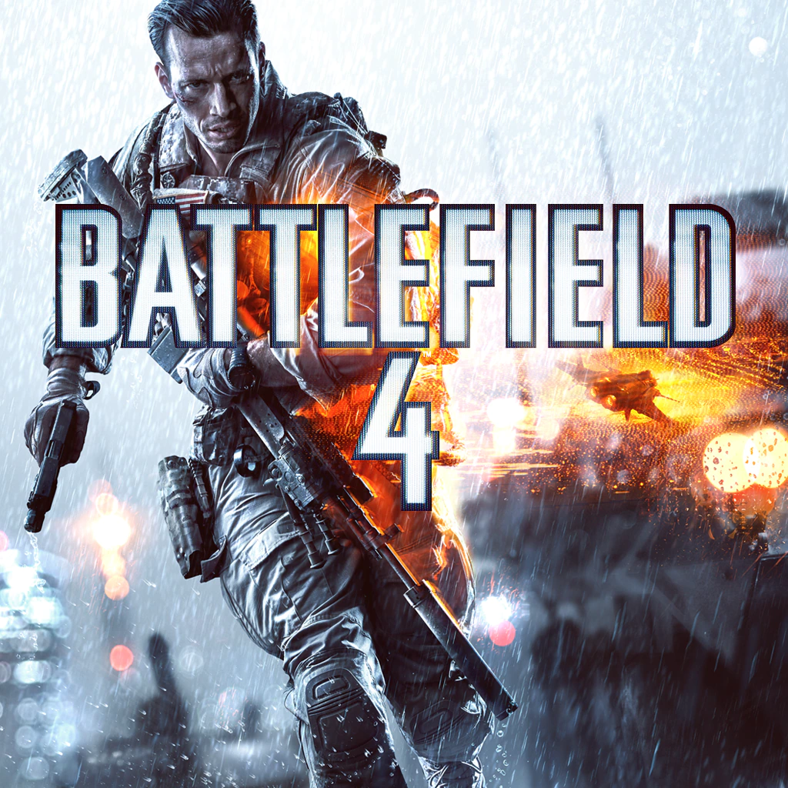
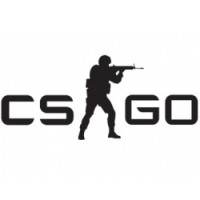

CELESTIAL GAMES
TABELA SOBRE JOGOS
| NOME | DESCRIÇÃO | ESTILO | LINK | CAPA |
| BattleField | Battlefield é uma série de jogos eletrônicos de tiro em primeira pessoa da Electronic Arts em parceria com a DICE seu primeiro titulo lançado foi em 2002 e hoje ja conta com mais de 5 jogos lançados. |
FPS | ENTRE! |  |
| CS:GO | Counter-Strike: Global Offensive é um jogo online desenvolvido pela Valve Corporation e pela Hidden Path Entertainment, sendo uma sequência de Counter-Strike: Source. É o quarto título principal da franquia. |
FPS ESTRATÉGICO | ENTRE! |  |
| Dark Souls | Dark Souls é um jogo eletrônico de RPG de ação desenvolvido pela FromSoftware e publicado pela Namco Bandai Games. Lançado originalmente em setembro de 2011 para PlayStation 3 e Xbox 360, é um sucessor espiritual de Demon's Souls. |
RPG,ESTRATÉGICO,AÇÃO. | ENTRE! |  |
| Doom | Doom é uma série de jogos eletrônicos de tiro em primeira pessoa desenvolvida pela id Software. A série, que se passa em um universo distópico apocalíptico, gira em torno de um fuzileiro espacial |
FPS,AÇÃO | ENTRE! |  |
| League Of Legends | League of Legends é um jogo eletrônico do gênero multiplayer online battle arena desenvolvido e publicado pela Riot Games. Foi lançado em outubro de 2009 para Microsoft Windows e em março de 2013 para macOS. |
MOBA,ESTRATÉGICO | ENTRE! | |
| Metal Gear | Metal Gear Solid V: The Phantom Pain é um jogo eletrônico de ação-aventura furtiva desenvolvido pela Kojima Productions, co-produzido pela Kojima Productions Los Angeles e realizado, desenhado, co-produzido e co-escrito por Hideo Kojima. |
STEALTH,FPS | ENTRE! |  |
| Minecraft | Minecraft, um jogo estilo sandbox, no qual você e seus amigos exploram um vasto mundo em nusca de recursos para sobreviver, em minecraft você pode construir o que você quiser e se aventurar. | SANDBOX,SOBREVIVÊNCIA | ENTRE! |  |
| Rainbow 6 | Tom Clancy's Rainbow Six Siege é um videojogo do género fps produzido pela Ubisoft Montreal. Foi lançado para Xbox One, PlayStation 4 e para Microsoft Windows. |
FPS,ESTRATÉGICO | ENTRE! |  |
| Valorant | Valorant é um jogo eletrônico multijogador gratuito para jogar de tiro em primeira pessoa desenvolvido e publicado pela Riot Games. | FPS,ESTRATÉGICO | ENTRE! |  |